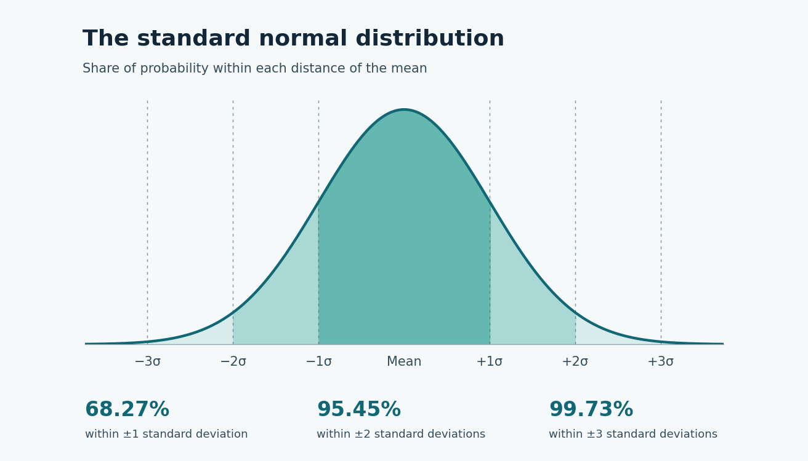

Author’s update, November 2026. When I wrote this in December 2025, I used Behavioral Software for applications whose behavior depended on probabilistic models. Earlier UA work also used Behavioral Applications. In my later work, I use Thinking Systems for a more specific engineering category. A system qualifies when at least one consequential runtime responsibility depends partly on model judgment. That distinction changes what we need to govern. The object of control is the deployed system and its consequential behavior, including decisions made at runtime. The living Uncertainty Architecture specification develops the current terminology and decision model.

Original cover from the December 2025 Towards AI edition.
Source and image details
Cover by Vitalii Oborskyi. Used by permission for this site edition.
The Probability Paradox: Building WITH Chaos
For the last 50 years, software engineering has had a single, unspoken goal: to kill uncertainty.
We built entire ecosystems designed to eliminate variance. We invented static typing, schema validation, and unit tests for one specific reason - to ensure that our software behaves like a deterministic function:
y = f(x)
In this world, if you feed Input A into the system, you must get Output B. Every single time. The variance (σ²) is zero. If the output changes without the code changing, we call it a "bug" and we fix it.
This is the era of Linear Software.
Then, GenAI arrived, and we realized we were holding the wrong map.
The Shift: From Functions to Distributions
Large Language Models do not follow the rules of f(x). They are not databases, and they are not search engines. They are probabilistic engines. They do not give you a single answer; they give you a sample from a distribution of probable answers:
y ~ P(y|x)


For a standard normal distribution, 68.27%, 95.45% and 99.73% of probability mass lie within one, two and three standard deviations of the mean, respectively. This is an illustration of probability distributions.
Source and image details
New diagram for the author-site edition, based on the standard normal density. CC BY 4.0.
When you query an LLM, you are not retrieving a stored record. You are rolling a dice (albeit a very weighted one). Even with temperature=0, the system retains inherent noise due to floating-point non-determinism and infrastructure variations.
This leads us to the Probability Paradox:
Old Engineering: Uncertainty is a defect.
AI Engineering: Uncertainty is the raw material.
We want the variance. That "noise" is what we call creativity, reasoning, and adaptability. We are no longer building structures out of rigid bricks (code); we are building them out of fluid (probability).
The Trap: Trying to Unit Test a Liquid
The industry's current crisis comes from trying to manage Behavioral Software (P(y|x)) using tools designed for Linear Software (f(x)).
November 2026 update. I now apply
y ~ P(y | x)to a responsibility that depends on Model Judgment. A fixed workflow can qualify as a Thinking System when model judgment materially affects what the system decides or does. Access rules, limits, and transaction controls can remain explicitly encoded within the same system.
I see engineering teams panic when they encounter this stochastic behavior. Their reflex is to "strangle" the uncertainty:
They set temperature=0.
They write rigid unit tests expecting exact string matches.
They hardcode logic to force the model into a narrow path.
This is a mathematical mistake.
If you successfully force an LLM to behave with zero variance (σ² = 0), you have turned a reasoning engine into a slow, expensive, and unreliable database. You have killed the value.
The goal of AI Engineering is not to eliminate the distribution. It is to manage the shape of the curve. We want to narrow the "bell curve" enough to be useful, and cut off the "long tails" where hallucinations and toxicity live - without destroying the core value of the model.
Artifact Reveal: Defining the Parameters
You cannot manage a probability distribution if you treat the parameters that define it as "magic strings" scattered across your codebase.
If a prompt is buried in your Python code, you are treating it like a constant variable. It is not. It is the configuration of your distribution. Changing a single adjective in a prompt shifts the entire probability curve of the output.
Therefore, the first step in Uncertainty Architecture is to extract this configuration from the code.
>>> THE ARTIFACT: Prompt Registry & Versioning
We must treat prompts as Versioned Configuration, not code.
Why: You need to know exactly which set of parameters produced a specific output distribution.
The Rule: No prompt strings in the application code. All prompts live in a registry, versioned (e.g., prompts/summarizer:v1.2), and fetched at runtime.
The Win: This separates the Linear Code (the application) from the Behavioral Configuration (the prompt), allowing us to tune the distribution without redeploying the application.
The “Code-Level” Limits: Actuators represent Muscles, not Brains
Once engineers accept that they are dealing with a probabilistic distribution (P(y|x)), their next instinct is usually to buy better tools to force it into submission.
This is why we see the explosion of the LLM Tooling Layer:
Orchestrators: LangChain, LangGraph, LlamaIndex.
Constraint Engines: Guidance, LMQL, S-DAD (State-Machine Decoding).
Native Features: OpenAI's JSON Mode, Function Calling.
These tools are brilliant. They are necessary. They will continue to evolve. But in the context of Control Theory, we must understand their physical role.
They are not the Controller (the brain). They are the Actuators (the muscles).
Muscles vs. Brains
An actuator in a robotic system is responsible for execution. It applies force to move the system from State A to State B.
Tools like LangChain and Constrained Decoding are powerful actuators. They are designed to fight Syntactic Entropy. They ensure that when you ask for a list of items, you get a valid JSON array, not a markdown bullet list. They ensure that your function arguments match the type signature.
However, muscles are blind.
A robotic arm with a powerful motor but no optical sensor will punch through a wall if you tell it to move to coordinates (x, y, z). It executes the command perfectly, but the result is a disaster.
Syntax is not Truth
The "Code-Level" trap is believing that because your output is valid, it is correct.
Syntactic Entropy (Solved by Tools): The model returns a broken JSON string.
Tool's job: Force valid JSON. Success.
Semantic Entropy (Ignored by Tools): The model returns a perfectly valid JSON that contains a hallucinated discount code or a toxic statement.
This is the danger.
If you rely solely on code-level tools, you are building a Headless Giant. It is strong (high throughput), it speaks perfect grammar (valid syntax), but it has no idea if it is lying, hallucinating, or violating business rules.
Code sees structure. It does not see meaning. To manage meaning, we need to constrain the muscles before they even move.
Artifact Reveal: Contracts for the Muscles
We cannot let our Actuators move freely. We need to define rigid mechanical limits - hard stops that prevent the system from physically generating an impossible or dangerous structure.
In Control Theory, these are Constraints. In software, this is the Schema.
We must move beyond "asking" the model to be good. We must enforce the shape of the output at the decoding level.
>>> THE ARTIFACT: Strict JSON Schemas & Policy-as-Code
We do not parse strings. We validate objects.
The Constraint: Every LLM interaction must have a strictly defined JSON Schema (using Pydantic or similar libraries).
The Rule: If the output does not match the schema (wrong types, missing fields, hallucinated fields), it is not a "bad response" - it is a System Error. It is rejected immediately at the Actuator level.
The Win: This eliminates Syntactic Entropy entirely. We no longer write code to "clean up" the model's output. We treat the model's output as a strongly typed object. If the type doesn't match, the muscle doesn't move.
Now that we have Actuators (LangChain) and Constraints (Schemas), we have a robot that can move and won't break its own limbs. But it still doesn't know where to go.
For that, we need to close the loop.
November 2026 update. In the current control-loop anatomy, a Constraint states an approved boundary, such as a refund limit. A Constraint Realization implements that boundary, for example by checking the amount and required approval before a refund goes through. A schema can enforce output shape. An Actuator carries out an authorized change, such as switching to a fallback or rolling back a release.
Control Theory: Closing the Loop
We have established that our system is stochastic (P(y|x)). We have established that we have Actuators (LangChain) and Constraints (Schemas).
But if you deploy this system today, it will fail. Why?
Because most AI applications currently built are Open Loop Systems.
The Physics of Drift
In Control Theory, an Open Loop system has no mechanism to correct itself.
Input → Model → Output
If the model is deterministic (f(x)), this is fine. But for a stochastic system (P(y|x)), an Open Loop architecture guarantees degradation.
Model Drift: The vendor updates the model weights, shifting the probability distribution.
Prompt Drift: A "fix" for one edge case inadvertently breaks three others.
Context Drift: Real-world user data differs from your testing data.
Without a feedback mechanism, the entropy of the system increases over time. To stabilize a stochastic system, you mathematically require a Negative Feedback Loop.
You need to measure the error and feed it back into the system to minimize the difference between what you got and what you wanted:
Error = Output - Intent
The Missing Sensor
This equation exposes the hardest problem in AI Engineering.
In traditional software, measuring error is easy. You write an assertion: assert result == 5. The intent is hardcoded.
In AI, there is no getBusinessTruth() function.
Is this summary "concise"?
Is this tone "professional"?
Is this answer "helpful"?
Because there is no code-level function for "Truth," engineers resort to the "Vibe Check". They run the prompt three times, read the output, nod their heads, and say, "Looks good to me."
The Vibe Check is not a measurement. It is a sample size of N=1 (or N=3) performed by a biased observer. It creates a false sense of security while the underlying probability distribution shifts unnoticed.
To close the loop, we need to replace "feelings" with "statistics." We need a Sensor.
Artifact Reveal: Building the Sensor
A sensor in a control loop must provide a consistent, repeatable signal. It cannot depend on the mood of the developer on a Tuesday afternoon.
We need a way to measure the distance between the Model's Output and the Business Intent across a statistically significant sample.
>>> THE ARTIFACT: Golden Sets & Eval Gates
We stop testing "ad-hoc." We build a calibrated instrument.
The Golden Set (The Reference Signal): A curated, versioned dataset of inputs (Questions) and their ideal outputs (Ground Truth). This defines "Intent." It must contain at least 30–50 examples to be statistically relevant.
The Eval Gate (The Sensor): An automated process that runs every time you change a prompt or model. It runs the Golden Set through the system and calculates the aggregate score (Accuracy, Hallucination Rate, Tone Match).
The Win: This converts subjective quality into an objective metric. We can now say: "This prompt change increased accuracy by 4% but increased latency by 200ms."
Now we have a Actuators (LangChain), Constraints (Schemas), and Sensors (Evals). We have the machinery to detect error.
But who reads the sensor? Who decides if an error of 4% is acceptable? The code cannot decide that.
For that, we need the Controller.
November 2026 update. In the current terminology, the evaluator produces evidence, the decision function chooses whether to block, limit, or release the change, and the deployment mechanism applies that decision. I now use Golden Scenarios to cover behaviors and failure modes that matter. The sample sizes and thresholds in this article, including the 30–50 examples above, are historical examples. The evidence needed for a release depends on the requirement and the decision it supports.
The Operating Model IS the Controller
In a classic control system (like a thermostat), the Controller is a simple piece of logic. It reads the Sensor (Current Temp), compares it to the Intent (Target Temp), and if there is a gap, it sends a signal to the Actuator (Turn on Heater).
In AI Engineering, we have the Actuators (LangChain) and the Sensors (Evals).
But who is the Controller?
Who analyzes the error signal from the Golden Set and decides how to adjust the system? Who decides if a 4% drop in accuracy is an acceptable trade-off for a 10% reduction in cost? Who decides if the model's tone has drifted from "Professional" to "Robotic"?
The Script Cannot Be the Controller
You cannot write a Python script to make these decisions.
A script does not know that the company just launched a new product line.
A script does not know that the legal team just changed the compliance policy.
A script cannot interpret the nuance of "Business Truth."
The "Control Logic" for a GenAI application is too complex and fluid to be hardcoded. It requires context, judgment, and adaptation.
The Definition: Operating Model = The Controller
This brings us to the core realization of Uncertainty Architecture:
The Operating Model is not "Management." It is the System Controller.
The "Brain" of this system is not a piece of software. It is a Socio-Technical System - a specific configuration of People and Processes working in a loop.
When a human reviews a Drift Report (Sensor Data), decides the model is hallucinating (Error Analysis), and updates the Prompt Registry (Control Signal), they are physically closing the Control Loop.
If you remove the Operating Model, if you fire the humans and stop the processes - you do not have an "autonomous system." You have an Open Loop system. You have muscles and nerves, but you have performed a lobotomy. The system will continue to move, but it will inevitably drift into failure.
Governance is not bureaucracy. Governance is the mechanism that injects Business Intent back into the system.
November 2026 update. I now distinguish the operating model from the Controller function. The operating model assigns decision rights. A Controller uses evidence to choose or authorize a response. Software can make a decision within delegated authority, such as blocking a release that fails an approved criterion. Decisions reserved for Human Authority go to the authorized person or role.
Artifact Reveal: Operators of the Controller
If the Operating Model is the Controller, we need to define its components. In a control room, you have specific operators for specific dials. In AI Engineering, we need specific roles to manage the loop.
We are not talking about generic "Project Managers." We need specialized technical operators.
>>> THE ARTIFACT: The Roles
The Prompt Steward (The Input Tuner):
Responsibility: They own the Prompt Registry. They are the only ones allowed to update the "configuration of the distribution." They treat prompts as assets, not text.
The Eval Owner (The Sensor Calibrator):
Responsibility: They own the Golden Set. They define what "Truth" looks like. If the sensor gives bad data (e.g., the Golden Set is outdated), the whole system fails. They ensure the signal is clean.
The AI Reliability Engineer (The Mechanic):
Responsibility: They ensure the Actuators (Pipelines, Vector DBs, Fine-tuning jobs) are functioning. They focus on latency, throughput, and schema enforcement.
Now we have a complete machine: Muscles, Nerves, and a Brain. But a brain needs a thought process. It needs a methodology to run experiments safely.
For that, we look to the history of software engineering.
The “Scrum Moment”: From Factory to Laboratory
Let's address the elephant in the room: engineers often hate Scrum. We hate the tickets, the stand-ups, and the endless ceremonies.
But we must acknowledge a historical fact. Before Agile took over, software engineering was modeled after a Factory (Waterfall).
The Assumption: We know exactly what we are building. The requirements are frozen. The variance is zero (σ² ≈ 0).
The Process: Linear execution. Design → Build → Verify.
Scrum changed the world because it admitted a hard truth: We don't know the future. It shifted the mental model from a Factory to a Laboratory. It introduced Empirical Process Control.
The Assumption: Requirements will change. We are discovering the product as we build it.
The Process: Cyclical experimentation. Hypothesis → Test → Learn.
The Application to AI: Escaping the Casino
Today, AI Engineering is not a Factory, but it is not a Laboratory either. It is currently a Casino.
Developers tweak a prompt, run it once, see a good result, and say, "I feel lucky."
They deploy it, and sometimes they win, sometimes they lose. This is not engineering; it is gambling with probability distributions.
Uncertainty Architecture is the “Scrum Moment” for AI.
It is the shift from the Casino to the Laboratory.
We do not need every developer to be a mathematician or a Data Scientist. We do not need them to calculate p-values. We simply need to give them a set of Rituals that automatically handle the stochastic nature of the system (P(y|x)).
If the process forces you to check the data, you don't need to understand the underlying math. The ritual protects you from the probability curve.
Redefining the Rituals
In this model, our standard ceremonies take on a new, physical meaning:
The Sprint is an Experiment: We are not just "building features." We are validating hypotheses about how the model behaves.
The Retro is Drift Analysis: We don't just ask "what went well." We ask "how did the distribution shift?"
Planning is Hypothesis Design: We define the target metrics for the next iteration of the prompt.
Artifact Reveal: The Laboratory Protocols
To run a lab safely, you need protocols. You cannot handle dangerous chemicals (or stochastic models) without a checklist.
>>> THE ARTIFACT: The Rituals
Weekly Drift Review:
The Ritual: A 30-minute review where the Eval Owner shows the team how the model's performance against the Golden Set has changed over the last week.
The Goal: Detect slow degradation before users do.
Eval Days:
The Ritual: Instead of a "Bug Bash," we have "Eval Bashes." The team spends a day expanding the Golden Set to cover new edge cases found in production.
The Goal: Calibrate the Sensor.
The Release Checklist (The Gate):
The Ritual: No prompt goes to production unless it passes the Eval Gate (e.g., "Accuracy > 95%", "Hallucination < 1%").
The Goal: Enforce the bounds of the distribution.
We have built the machinery (Actuators), installed the sensors (Evals), hired the operators (Roles), and written the protocols (Rituals).
Now, let's put it all together.
Conclusion: The Full Stack of Control
We started with a mathematical problem: How do we build reliable systems out of probabilistic components (y ~ P(y|x))?
We explored why traditional code (f(x)) fails, why tools are just "muscles," and why we need a "brain" to close the loop.
When you put all these pieces together, you are no longer just "writing scripts." You are building an AI Control Plane.
The Stack: From Code to Governance
Uncertainty Architecture is not a philosophy. It is a four-layer technology stack. If you remove any layer, the control loop breaks, and the system drifts into entropy.
The Code Layer (The Actuators)
Tools: LangChain, LlamaIndex, Vector DBs.
Function: Execution. They move the system. They fight Latency.
The Constraint Layer (The Skeleton)
Tools: Strict JSON Schemas, Pydantic, Guardrails.
Function: Structure. They fight Syntactic Entropy. They guarantee the output is machine-readable.
The Sensor Layer (The Nerves)
Tools: Golden Sets, Eval Gates, Scoring Scripts.
Function: Measurement. They fight Blindness. They convert "feelings" into statistics to detect drift.
The Operating Layer (The Controller)
Tools: The UA Framework (Roles, Rituals, Registry).
Function: Judgment. It fights Semantic Entropy. It injects business intent and closes the feedback loop.
November 2026 update. I now describe these four control functions as capabilities that can be distributed across application code, platform services, and people. Feedback closes the loop when evidence reaches a decision function and authorized action changes operation. Bounded control also depends on approved operating limits, evidence fit for the decision, and a way to intervene before the consequences become unacceptable.
Final Thought: Engineering Luck
For too long, the AI industry has been obsessed with finding the "Magic Prompt" - that one perfect string of words that will make the model behave perfectly forever.
Stop looking for the magic prompt. It does not exist.
In a stochastic system, perfection is mathematically impossible. There will always be a distribution. There will always be tails. There will always be error.
Real engineering is not about hoping for a perfect output. It is about building a system that can measure the error, constrain the variance, and correct the drift faster than it impacts your users.
That is what Control Theory does for mechanics. That is what Uncertainty Architecture does for AI.
Stop coding for luck. Start building the Control Loop.
Author
Vitalii Oborskyi is an enterprise delivery leader and independent research author. His work focuses on AI-assisted software delivery and the governance of systems that depend on model judgment. He is the author of Uncertainty Architecture and The Subprime Code Crisis.
Important Articles:
Same topic/more practical angle— Uncertainty Architecture: A Modern Approach to Designing LLM Applications:
Cultural Grounding - ...The Future, the Mirror and the Book
Medium - https://medium.com/towards-artificial-intelligence/the-future-the-mirror-and-the-book-0085eb181cfa
GitHub for Open Source Operational Model - Uncertainty Architecture(UA)